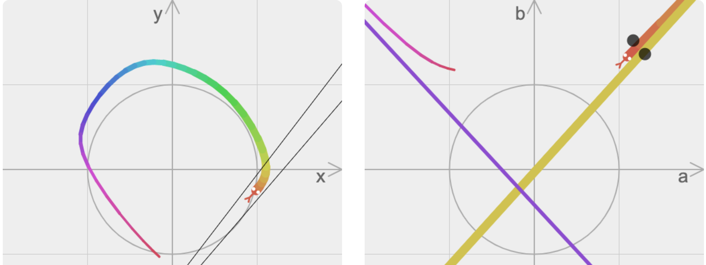
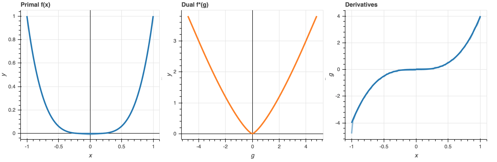

Rémi Le Priol
Ph.D. Candidate
Mila, Université de Montréal
About me
I am currently working as an analytics engineer at Padam Mobility, a software company enabling demand responsive public transport throughout the globe.
In my Ph.D. I explored ideas ranging from causality to physics and optimization, with the general purpose of making deep learning more robust. I was lucky to benefit from the supervision of Simon Lacoste-Julien and Yoshua Bengio. I also got the opportunity to work on these topics at Facebook AI Research with Léon Bottou. I enjoy science, especially when it relies on beautiful mathematics or when it is made accessible with appropriate illustrations, and I am striving to make this true in my own research. You can find my full list of publications on Google Scholar.
Short bio: I grew up and studied in Paris area, most notably at Ecole Polytechnique (X2013) and M2 MVA , before starting my Ph.D. in 2018. Details in my resume. Whether in or out of research, I enjoy truthfully relating to my fellow human beings, which often takes the form of acroyoga, or non-violent communication.
Some projects I care about
DualSnakes
an interactive visualization I build on during Summer 2020.
It illustrates projective duality and its connection to Fenchel duality, by displaying the dual of any curve drawn by the user.

DualityViz
an interactive visualization I built during Spring 2020's lockdown.
It aims at providing intuitions for convex duality, by showcasing the algebraic formulas on preset or user-provided examples, with a particular focus on the space-slope duality.

SDCA4CRF
During the year 2017 I worked on an optimization algorithm for a structured prediction model called CRF. Along the way I found out a way to systematically improve the convergence speed of the algorithm SDCA by sampling data points adaptively.

bitstring-knitting a visual inspection of distances applied to bit strings.